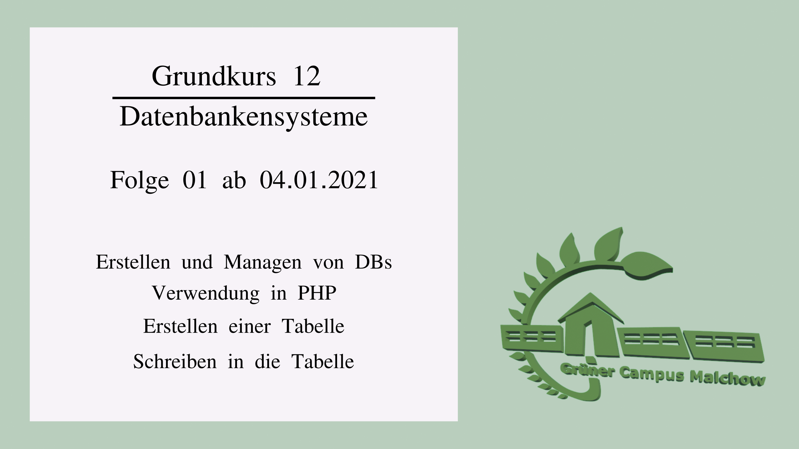
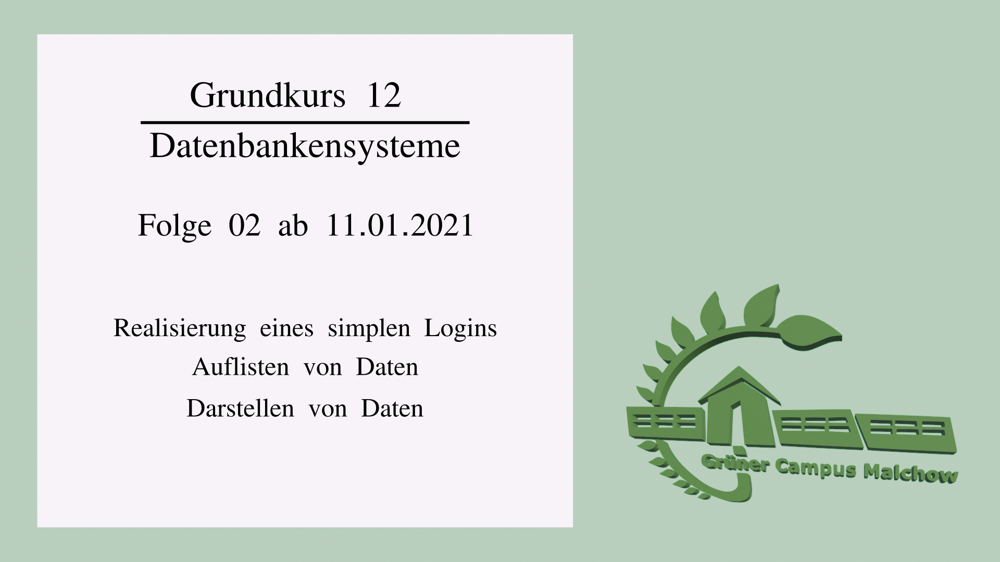

**Webseite des FBInformatik**
Grundkurs Informatik 12
# Videokonferenzen
Leider wird das Angebot, die Konferenzen als Hilfe für die Aufgabenbearbeitung zu nutzen, nicht angenommen. Ich habe in den vergangenen Wochen immer darauf geachtet, die ganze reguläre Unterrichtszeit erreichbar zu sein. Dabei war ich entsprechend unproduktiver - ohne dass das einen Mehrwert für eine Schülerin oder einen Schüler gebracht hätte.
Deshalb gelten ab sofort folgende Regeln für die Konferenzen:
1. Alle Konferenzen beginnen zur regulären Unterrichtszeit.
1. Für alle Zuspätkommenden bleibt die Konferenz mindestens 15 Minuten besetzt.
1. Wenn sich niemand in die Konferenz einfindet, ist die Konferenz 15 Minuten nach normalem Unterrichtsbeginn beendet.
1. Anfragen per Mail, Lernraum oder Messenger beantworte ich weiterhin zeitnah.
# Klausur
Der Klausurtermin für Q2 steht fest: **12.05.2021**.
# GK 12
In den nächsten Stunden wird es um die Verwendung von Datenbanken mit PHP gehen. In diesem Jahr gehen wir die Sache anders herum an: Zuerst arbeiten Sie etwas praktischer, dann erst geht es an die Theorie und das Design.
## Abgabetermine
Abgabefristen sind immer bis zum Folgetag Mitternacht, also bis **Donnerstag 23:59 Uhr**.
!!! Achtung
Fertige Lösungen werden nicht(!) über den derzeit unzuverlässigen und überlasteten Lernraum abgegeben. Lösungen werden immer(!) per E-Mail an baldauf@gruener-campus-malchow.de gesendet.
## Ab 04.01.2021
Dieser Bereich wurde zuletzt am 04.01.21 um 12:11 Uhr aktualisiert.
In folgendem Tutorial zeige ich, wie man eine Datenbank in bplaced erstellt und diese in PHP verwendet.

**Aufgabe für diese Woche**
1. Erstelle eine Datenbank und verwende diese im SimpleChat.
1. Erstelle eine Tabelle in der Datenbank, die den Chatverlauf speichert.
## Ab 11.01.2021
Dieser Bereich wurde zuletzt am 11.01.21 um 15:01 Uhr aktualisiert.

Erstelle drei weitere Tabellen in der Datenbank:
users
| id | username | secret |
|----|----------|-----------|
| 0 | user1 | 234fdw434 |
| 1 | user2 | 2sb3zjr34 |
| 2 | marya | 23kje57y4 |
chats
| id | chat |
|----|-------------|
| 0 | food |
| 1 | computer |
user_in_chats
| id_chat | id_user | timestamp | public |
|---------|----------|---------------------|--------|
| 0 | 0 | 2021-01-11 15:01:00 | true |
| 0 | 1 | 2021-01-10 12:21:00 | true |
| 0 | 2 | 2021-01-10 12:21:00 | true |
| 1 | 2 | 2021-01-10 12:21:00 | true |
**Aufgabe für diese Woche**
1. Erstellen Sie ein Login, wobei das Passwort zunächst dem "secret" aus der DB entsprechen muss.
1. Erstellen Sie eine Auflistung aller bekannten Chats. Man soll auswählen können, welchen Chat man betritt.
1. Ergänzen Sie die Tabelle mit den Posts so, dass sie von speziellen Nutzern stammen und immer in einem Chat stattfinden. Passen Sie auch die Darstellung der Posts entsprechend an.
## Ab 18.01.2021
Dieser Bereich wurde zuletzt am 19.01.21 um 10:17 Uhr aktualisiert.
Wir steigen zunächst in die Theorie der Datenbankensysteme ein. Hierzu lesen Sie bitte den [Wikipediaartikel zu Datenbanken](https://de.wikipedia.org/wiki/Datenbank). Das ist rein informativ und soll bei der Einordnung der eigentlichen Aufgabenstellung helfen:
**Aufgaben**
Erstellen Sie eine Präsentation in Ihrem Lieblingsprogramm, die den Titel "Funktionen eines DBMS" trägt. Die einzelnen Themen entsprechen der Überschrift aus der Wikipedia:
* Datensicherheit
* Transaktionen
* Datenintegrität
* Abfrageoptimierung
* Anwendungsunterstützung
* Sprachen
* Mehrbenutzerfähigkeit
Sie sollen dazu mindestens eine Folie erstellen, die den jeweiligen Sachverhalt knapp beschreibt. Beachten Sie, dass Sie illustrative Bilder verwenden!
Präsentieren Sie Ihr Ergebnis, indem Sie einen ScreenCast erstellen. Darin halten Sie einen Vortrag zu Ihrer Präsentation. Senden Sie mir Ihr Video zu. Bedenken Sie, dass Ihr Ergebnis hier dem Kurs zur Verfügung gestellt wird. Auf Wunsch kann das Video auch auf unserem Youtube-Kanal gezeigt werden.
## Ab 25.01.2021
Dieser Bereich wurde zuletzt am 26.01.21 um 08:55 Uhr aktualisiert.
Übernehmen Sie die folgende Tabelle in ein eigenes Markdown-Dokument. Der Quelltext dieser Seite ist eine gute Ausgangslage.
Ergänzen Sie die leeren Tabellenfelder in den Spalten der jeweiligen Datenbank. Zeigen Sie, inwiefern und auf welche Weise das jeweilige DBMS die Funktionen erfüllt. Nutzen Sie dabei folgende Quellen: [MySQL-Dokumentation](https://dev.mysql.com/doc/refman/8.0/en/), [SQLite-Dokumentation](https://www.sqlite.org/docs.html).
Halten Sie in der Tabelle Stichworte und passende Verweise auf die jeweilige Seite der Dokumentation fest.
| Funktion | MySQL | SQLite |
|----------|--------------------|------------------|
| Datensicherheit | Storage Engines implementiert (https://dev.mysql.com/doc/refman/8.0/en/pluggable-storage-overview.html), Backups möglich (https://dev.mysql.com/doc/refman/8.0/en/backup-and-recovery.html)| |
| Transaktionen ||Transaktionen (https://www.sqlite.org/lang_transaction.html)|
| Datenintegrität ||Foreign Key Support (https://www.sqlite.org/foreignkeys.html)|
| Abfrageoptimierung |||
| Anwendungsunterstützung |||
| Sprachen |||
| Mehrbenutzerfähigkeit ||Kein Usermanagement!!! Aber Transaktionen (https://www.sqlite.org/lang_transaction.html)|
Ein gute Orientierung bietet die folgende Grafik über den Aufbau eines MySQL-DBMS. Darin findet man viele Schlüsselwörter, die man anschließend in den Dokumentationen nachschlagen kann.

Senden Sie Ihre Markdown-Tabelle fristgerecht per E-Mail an mich.
## Ab 08.02.2021
Erstellen Sie eine Präsentation auf https://hackmd.io/, in welcher Sie die einzelnen Funktionen eines DBMS (Datensicherheit, Transaktionen, Datenintegrität, Abfrageoptimierung, Anwendungsunterstützung, Sprachen, Mehrbenutzerfähigkeit) erläutern. Präsentationen mit Impress, PowerPoint oder anderen WYSIWYG-Editoren sind nicht gestattet. Sie sollen Ihre Präsentation in Markdown erstellen.
Wenn Sie Probleme beim Registrieren auf hackmd.io haben, melden Sie sich bitte. Anleitungen für die Nutzung der Slide-Funktion sind auf https://hackmd.io/s/slide-example zu finden. Wenn Sie gar nicht klar kommen, melden Sie sich bei mir.
Als Inhaltsquellen können Sie die Manuals oder die Wikipedia-Artikel aus der letzten Aufgabe verwenden.
Achten Sie darauf, auch passende Bilder oder Grafiken einzubinden. **Stellen Sie sich darauf ein, dass Sie zu der Präsentation einen Vortrag in einem Videochat halten.**
Tipp: Erstellen Sie ein Markdown-Dokument, das inhaltlich weitestgehend vollständig ist, BEVOR Sie beginnen, die Folien zu gestalten. Alle Designaufgaben nimmt Ihnen das System ab. Generell gilt: Weniger ist mehr. Zu Orientierung schauen Sie sich meinen KI-Vortrag an (https://hackmd.io/@S4dy-Ci9QuCEhcL0QGgTtA/HyPbNa51_ bzw. https://gcm.schule/video/KI1-3_AB.mp4). Der geht allerdings über das hinaus, was ich zunächst von Ihnen erwarte.
Verbindlicher Termin für den Vortrag ist: Mittwoch, der 17.02.2021 um 8:10 Uhr. Ein Fehlen zu diesem Termin ist beim Tutor und bei mir im Vorfeld zu begründen.
## Abgabestatus
|Woche |JL |JM |KW |MM |MP |
|-------|---|---|---|---|---|
|04.1.|0|1|1|1|0|
|11.1.|0|0|0|1|0|
|18.1.|0|0|0|1|0|
|25.1.| | | | | |
>